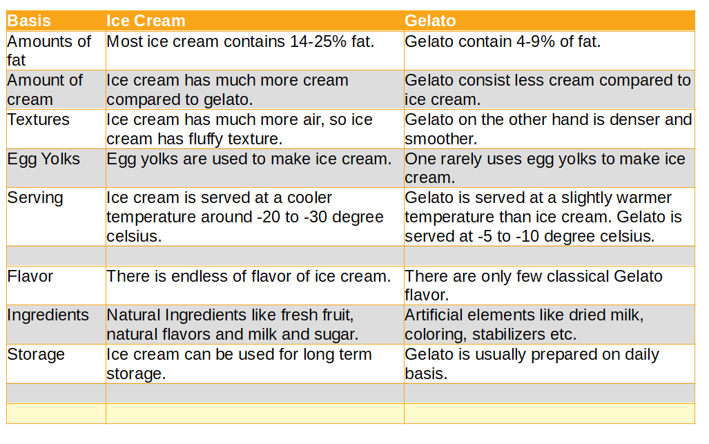

What is the main difference between ice cream and gelato?
The main difference between ice cream and gelato is their texture, ice cream is much more fluffy compared to gelato. Not only ice cream is fluffy it consist more amount of cream which makes it rich in fat. Gelato is ice cream without the cream - just whole milk and egg yolks.
The word gelato is derived from the Italian verb gelare, meaning "to freeze". It is no surprise that the Italians are most often credited with the invention of modern-day gelato. From a scientific standpoint, gelato is created by combining liquids(such as milk and cream) that are sweetened with sugars and flavored with any number of palate-pleasing substances(such as strawberries or vanilla bean).
You will be hard pressed to find two authorities who agree on a single, true definition of gelato. Some experts believe gelato should contain eggs, while others strongly disagree. What can be confirmed about gelato is the airiness. Gelato incorporates less air than ice cream, creating denser, more flavorful results.
Many historians believe that ice cream dates back to thousands of centuries B.C. in ancient China, when snow was the major factor in freezing creams. Over the years, ice cream made its way to Europe; Marco Polo (1254–1324) is usually credited with bringing the concept to Italy after his travels to the Orient. From there, ice cream spread north into France (Catherine de Medici is often cited as the person behind the spread from Italy to France), to Britain, and finally, to the United States.
| Basis | Ice Cream | Gelato |
| Amounts of fat | Most ice cream contains 14-25% fat. | Gelato contain 4-9% of fat. |
| Amount of cream | Ice cream has much more cream compared to gelato. | Gelato consist less cream compared to ice cream. |
| Textures | Ice cream has much more air, so ice cream has fluffy texture. | Gelato on the other hand is denser and smoother. |
| Egg Yolks | Egg yolks are used to make ice cream. | One rarely uses egg yolks to make ice cream. |
| Serving | Ice cream is served at a cooler temperature around -20 to -30 degree celsius. | Gelato is served at a slightly warmer temperature than ice cream. Gelato is served at -5 to -10 degree celsius. |
| Flavor | There is endless of flavor of ice cream. | There are only few classical Gelato flavor. |
| Ingredients | Natural Ingredients like fresh fruit, natural flavors and milk and sugar. | Artificial elements like dried milk, coloring, stabilizers etc. |
| Storage | Ice cream can be used for long term storage. | Gelato is usually prepared on daily basis. |
Ice Cream
In its most basic form, ice cream is a mixture of cream and/or milk, sugar and sometimes eggs that is frozen while being churned to create a frozen product.Ice cream (derived from earlier iced cream or cream ice) is a sweetened frozen food typically eaten as a snack or dessert. It may be made from dairy milk or cream, or soy, cashew, coconut or almondmilk, and is flavored with a sweetener, either sugar or an alternative, and any spice, such as cocoa or vanilla. Colourings are usually added, in addition to stabilizers.
Gelato
On average, gelato costs 30-50% more than ice cream. Gelato is a frozen dessert popular in Italy. It is generally made with a base of 3.25% milk and sugar. It is generally lower in fat than other styles of frozen desserts. Gelato typically contains 70% less air and more flavoring than other kinds of frozen desserts, giving it a density and richness that distinguishes it from other ice creams. Most commercial ice cream has a 100 percent overrun. It’s half air; for each tablespoon of base put into the machine, two tablespoons come out. Premium ice cream has an overrun below 33 percent; super premium, sold strictly in pints, around 20 percent. But gelato has still less—traditionally, under 10 percent, often as little as 2 percent. Some Gelato options to try Almond Gelato, Anise Gelato, Apricot Gelato, Bacio Gelato, Bacio Gelato, Banana Gelato, Blackberry Gelato, Cassata Gelato, Chestnut Gelato, Date Gelato, Dulce de Leche Gelato, Egg Nog Gelato, Espresso Gelato, Fig Gelato, Ginger Gelato, Hazelnut Gelato, Lime Gelato, Mint Gelato, Peanut Butter Gelato, Vanilla Gelato, White Choclate Gelato.